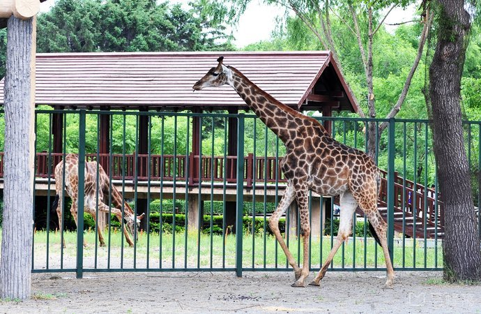
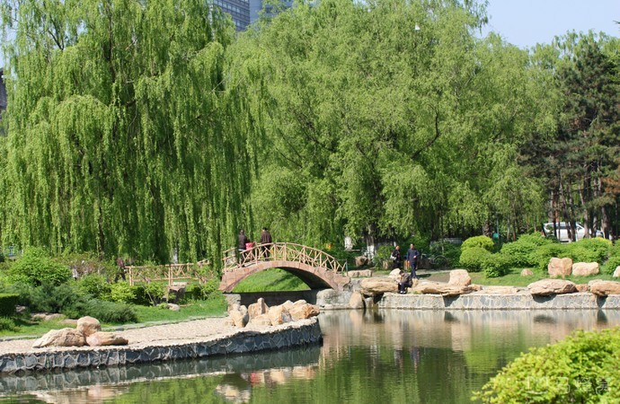
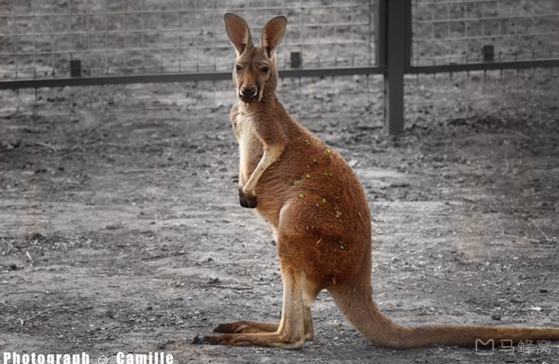
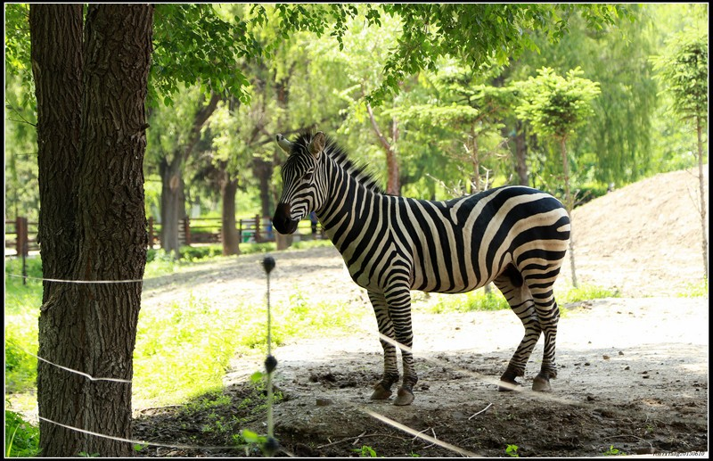
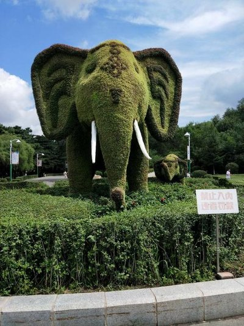

折叠 景区介绍
长春动植物公园位于长春市东南部，人民大街东侧500米，距市中心人民广场3公里远，占地面积74公顷。公园始建于1938年，当时其面积之大，展出的动植物品种之多，而号称“亚洲第一”，兴盛一时。现在动植物公园以其树茂林深、珍禽异兽、奇花异木和山水辉映的优美环境，使游客流连忘返，是一处休闲娱乐、度假聚会的极佳场所。 
{kind=link}
园内地型复杂，人工湖将公园分成三个自然部份：东区为珍禽异兽馆，汇集北方动植物200余种，有自然小王国之称；西区以人工土山模拟植物垂直分布点，建有“长白原野”微缩景区；北部是热带植物园。 动物展区内有东北虎、猞俐、大鸨、丹顶鹤等珍稀野生动物；金丝猴、长颈鹿、犀牛、大象、广西猴等国内、外的珍禽异兽；总数有200余种。在动物展区内，还建有一处“百鸟乐园”，百余种、三千余只鸟散放在一个高8米，面积1800平方米的进入式大鸟笼，笼内有“人鸟对话区，驯鸟表演区”，笼内配置花草树木、山石小景，这一人鸟同处一处的布局真是别有一番情趣。园北部的大型游乐场，有激流勇进、太空飞船等惊险刺激的活动项目。
园内还有一处占地1.3公顷、具有浓郁日本国风情的园林精品园，友谊园。如果您有兴登上园西部的高山，可鸟瞰公园全貌和长春市的市中心区。 园内栽植木本植物140余种，其中有产于长白山的吉林省特有树种美人松等珍贵树种，还建有百花园、蔷薇、木犀园等植物观赏区。
折叠 交通攻略
正门(南门)公交站点:80路、265路、227路、228路、25路、160路、238路;
北门公交站点:277路、226路、241路、17路;
西门公交站点:286路、25路、241路;
东门公交站点:17路、265路、25路、125路、271路、246路。
折叠 门票信息
门市价：30.0元
成人30元；中小学生凭学生证、60周岁以上老人凭身份证享受半票15元；
身高1.2米以下儿童、70周岁以上老年人、残疾人和现役军人免票。
折叠 开放时间
夏季8:00-17:00,冬季8:00-16:30。
折叠 官方电话
0431-82866611, 0431-82860547。
折叠 景点相册


折叠 主要景点
长春动植物公园是一处动物和植物相结合的公园。它的种植规划是按游览型公园规划的。园内有各种木本植物达130余种;草本植物达200多种;温室植物数十种。长春动植物园内地型复杂，人工湖将公园分成三个自然部分:东区为珍禽异兽馆，汇集北方动植物200余种，有自然小王国之称;西区以人工土山模拟植物垂直分布点，建有"长白原野"微缩景区;北部是热带植物园。
动物展区内有东北虎、非洲狮、猞俐、大鸨、丹顶鹤、火烈鸟、金丝猴、长颈鹿、犀牛、亚洲象、广西猕猴、斑马、黑猩猩等国内外珍禽异兽，总数有200余种。在动物展区内还建有一处"百鸟乐园"，百余种、三千余只鸟散放在一个高8米，面积1800平方米的进入式大鸟笼，笼内有"人鸟对话区、驯鸟表演区"，笼内配置花草树木、山石小景，这一人鸟同处一处的布局真是别有一番情趣。园北部的大型游乐场，有激流勇进、太空飞船等惊险刺激的活动项目。
折叠 注意事项
从2008年7月26日开始，长春动植物公园就在每个大门处都张贴了通告:"为了推进生态公园建设，促进动物、自然、人类和谐关系，公园决定于2008年8月2日开始，永久性散放一批动物。请游人不要带宠物入园;不要挑逗、追打、拦截动物;不要向动物投喂食物。否则，惊吓动物，由此造成的任何损害事故，均由当事者承担全部经济和刑事责任。